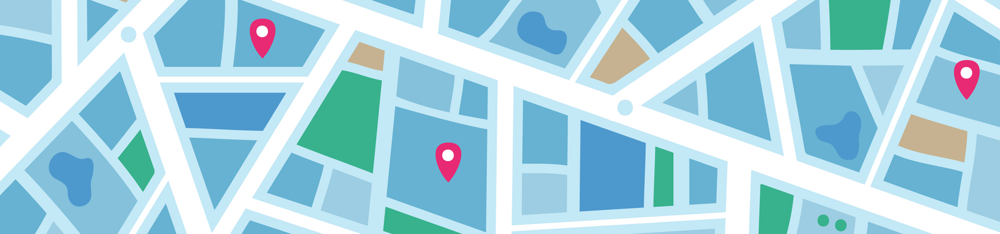

Seja solidário, doe sangue!
Somos a sangue solidário uma plataforma que a plataforma que conecta vidas por meio da solidariedade. Com apenas alguns cliques, você descobre onde sua doação é necessária ou cadastra a sua necessidade.
Junte-se a nós nessa missão de amor e empatia e faça parte da corrente que transforma a solidariedade em esperança. Doe sangue, doe vida.

12 hemocentros e 67 pessoas precisam da sua ajuda!

Sobre a plataforma
Na Sangue Solidário, o primeiro passo é o cadastro do usuário, que pode ser uma pessoa física ou uma instituição de saúde. Após o cadastro, o usuário pode solicitar uma doação de sangue, fornecendo informações essenciais como o tipo sanguíneo necessário, motivo da solicitação e o endereço para facilitar a localização. Além disso, a plataforma oferece um catálogo de solicitações onde todos podem visualizar as demandas cadastradas no sistema, permitindo que doadores encontrem facilmente pessoas ou instituições que precisam de ajuda, criando uma rede ágil e eficiente de apoio à doação de sangue.